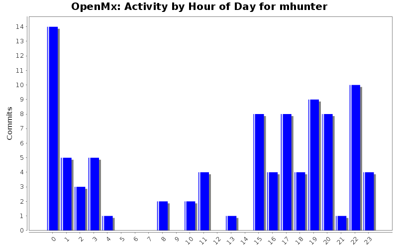
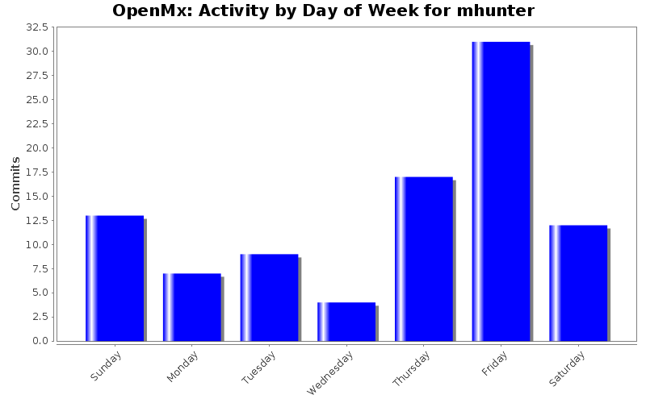
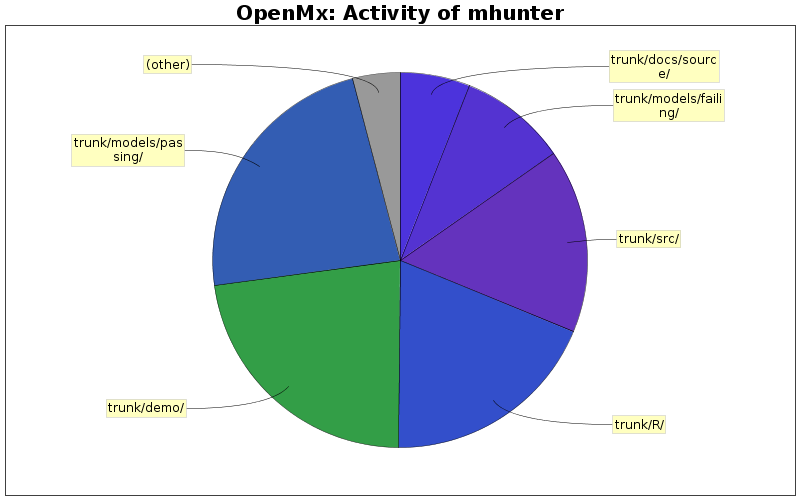

| Directory | Changes | Lines of Code | Lines per Change |
|---|---|---|---|
| Totals | 93 (100.0%) | 5970 (100.0%) | 64.1 |
| trunk/models/passing/ | 12 (12.9%) | 1379 (23.1%) | 114.9 |
| trunk/demo/ | 14 (15.1%) | 1357 (22.7%) | 96.9 |
| trunk/R/ | 12 (12.9%) | 1126 (18.9%) | 93.8 |
| trunk/src/ | 31 (33.3%) | 951 (15.9%) | 30.6 |
| trunk/models/failing/ | 10 (10.8%) | 556 (9.3%) | 55.6 |
| trunk/docs/source/ | 7 (7.5%) | 359 (6.0%) | 51.2 |
| trunk/man/ | 4 (4.3%) | 238 (4.0%) | 59.5 |
| trunk/ | 3 (3.2%) | 4 (0.1%) | 1.3 |

Fixed some typos in the LISREL objective manual/doc page.
7 lines of code changed in 1 file:
Added I-A inverse speedup to LISREL objective
72 lines of code changed in 3 files:
Minor changes to LISREL objective. Mainly, added a now passing test of FIML with LISREL that has FIML rearrange the observed data columns instead of forcing the user to do so.
230 lines of code changed in 4 files:
Added a manual/help page for mxLISRELObjective function. Really added this time.
139 lines of code changed in 1 file:
Added a manual/help page for mxLISRELObjective function. Also tried to modify how submodels of LISREL are done.
12 lines of code changed in 1 file:
Added one more error checking condition to frontend of LISREL objective. Also, LISREL test of subsets of LISREL matrices now passes.
313 lines of code changed in 3 files:
Changed LISREL covariance and means calculation to allow for subsets of matrices to work.
154 lines of code changed in 2 files:
Added failing test of subset of LISREL matrices.
251 lines of code changed in 1 file:
First step toward allowing some LISREL matrices to be NULL in backend.
39 lines of code changed in 1 file:
Checked the LISREL frontend error checking. Corrected a couple problems and allowed for reasonable combinations of matrices to be specified without errors. However, the backend does not allow this yet and will crash unless all 9 matrices are given. Next step is to change the backend to allow computation without this potential crash.
41 lines of code changed in 1 file:
Added lots of error checking to frontend of LISREL objective. Added minor changes to LISREL tests.
289 lines of code changed in 3 files:
Modified LISREL Objective frontend enough to get a passing FIML test.
256 lines of code changed in 3 files:
Added dimnames to observed data in original LISREL test.
3 lines of code changed in 1 file:
LISREL Objective frontend now uses some but not all dimnames (and not very intelligently) to set its dataColumns attribute for use with FIML.
3 lines of code changed in 1 file:
Fixed typo in MxLISRELObjective
1 lines of code changed in 1 file:
Added dataColumns to R section of LISREL Objective to help get raw data test working. Also matched in LISREL the subObjective calls found in the C initialization of RAM objective.
9 lines of code changed in 2 files:
Added means to raw data LISREL test. Apparently forgot before.
1 lines of code changed in 1 file:
Added failing FIML test for LISREL. Added dimnames to exisiting LISREL test with means. Changed RAM inverse test to use ML instead of FIML to speed it up. Working on Frontend for LISREL to actually look at dimnames.
256 lines of code changed in 4 files:
Added test of the RAM inverse calculation comparing the calculation with speed up turned on and with it turned off.
191 lines of code changed in 1 file:
Fixed a bug in RAM fast inverse calculation. When the fast inverse was turned off, it used zero matrix before and now uses the correct matrix.
3 lines of code changed in 1 file:
(27 more)